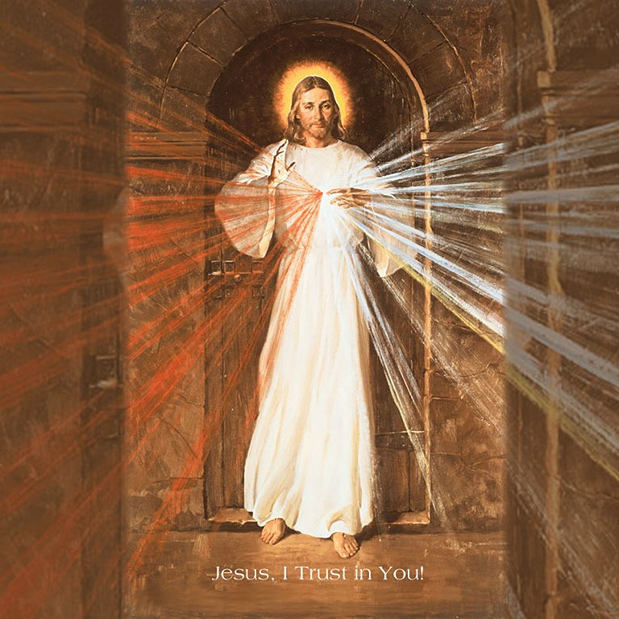

❤️ The Novena to Divine Mercy

First Day
Today bring to Me all mankind, especially all sinners, and immerse them in the ocean of My mercy.
Most Merciful Jesus, whose very nature it is to have compassion on us and to forgive us, do not look upon our sins but upon our trust which we place in Your infinite goodness. Receive us all into the abode of Your Most Compassionate Heart, and never let us escape from it. We beg this of You by Your love which unites You to the Father and the Holy Spirit.
Eternal Father, turn Your merciful gaze upon all mankind and especially upon poor sinners, all enfolded in the Most Compassionate Heart of Jesus. For the sake of His sorrowful Passion show us Your mercy, that we may praise the omnipotence of Your mercy for ever and ever. Amen.
Second Day
Today bring to Me the souls of priests and religious, and immerse them in My unfathomable mercy.
Most Merciful Jesus, from whom comes all that is good, increase Your grace in men and women consecrated to Your service, that they may perform worthy works of mercy; and that all who see them may glorify the Father of Mercy who is in heaven.
Eternal Father, turn Your merciful gaze upon the company of chosen ones in Your vineyard — upon the souls of priests and religious; and endow them with the strength of Your blessing. For the love of the Heart of Your Son in which they are enfolded, impart to them Your power and light, that they may be able to guide others in the way of salvation and with one voice sing praise to Your boundless mercy for ages without end. Amen.
Third Day
Today bring to Me all devout and faithful souls, and immerse them in the ocean of My mercy.
Most Merciful Jesus, from the treasury of Your mercy, You impart Your graces in great abundance to each and all. Receive us into the abode of Your Most Compassionate Heart and never let us escape from it. We beg this grace of You by that most wondrous love for the heavenly Father with which Your Heart burns so fiercely.
Eternal Father, turn Your merciful gaze upon faithful souls, as upon the inheritance of Your Son. For the sake of His sorrowful Passion, grant them Your blessing and surround them with Your constant protection. Thus may they never fail in love or lose the treasure of the holy faith, but rather, with all the hosts of Angels and Saints, may they glorify Your boundless mercy for endless ages. Amen.
Fourth Day
Today bring to Me those who do not believe in God and those who do not yet know Me.
Most compassionate Jesus, You are the Light of the whole world. Receive into the abode of Your Most Compassionate Heart the souls of those who do not believe in God and of those who as yet do not know You. Let the rays of Your grace enlighten them that they, too, together with us, may extol Your wonderful mercy; and do not let them escape from the abode which is Your Most Compassionate Heart.
Eternal Father, turn Your merciful gaze upon the souls of those who do not believe in You, and of those who as yet do not know You, but who are enclosed in the Most Compassionate Heart of Jesus. Draw them to the light of the Gospel. These souls do not know what great happiness it is to love You. Grant that they, too, may extol the generosity of Your mercy for endless ages. Amen.
Fifth Day
Today bring to Me the souls of those who have separated themselves from the Church.
Most Merciful Jesus, Goodness Itself, You do not refuse light to those who seek it of You. Receive into the abode of Your Most Compassionate Heart the souls of those who have separated themselves from Your Church. Draw them by Your light into the unity of the Church, and do not let them escape from the abode of Your Most Compassionate Heart; but bring it about that they, too, come to glorify the generosity of Your mercy.
Eternal Father, turn Your merciful gaze upon the souls of those who have separated themselves from Your Son's Church, who have squandered Your blessings and misused Your graces by obstinately persisting in their errors. Do not look upon their errors, but upon the love of Your own Son and upon His bitter Passion, which He underwent for their sake, since they, too, are enclosed in His Most Compassionate Heart. Bring it about that they also may glorify Your great mercy for endless ages. Amen.
Sixth Day
Today bring to Me the meek and humble souls and the souls of little children, and immerse them in My mercy.
Most Merciful Jesus, You Yourself have said, "Learn from Me for I am meek and humble of heart." Receive into the abode of Your Most Compassionate Heart all meek and humble souls and the souls of little children. These souls send all heaven into ecstasy and they are the heavenly Father's favorites. They are a sweet-smelling bouquet before the throne of God; God Himself takes delight in their fragrance. These souls have a permanent abode in Your Most Compassionate Heart, O Jesus, and they unceasingly sing out a hymn of love and mercy.
Eternal Father, turn Your merciful gaze upon meek souls, upon humble souls, and upon little children who are enfolded in the abode which is the Most Compassionate Heart of Jesus. These souls bear the closest resemblance to Your Son. Their fragrance rises from the earth and reaches Your very throne. Father of mercy and of all goodness, I beg You by the love You bear these souls and by the delight You take in them: Bless the whole world, that all souls together may sing out the praises of Your mercy for endless ages. Amen.
Seventh Day
Today bring to Me the souls who especially venerate and glorify My Mercy and immerse them in My mercy.
Most Merciful Jesus, whose Heart is Love Itself, receive into the abode of Your Most Compassionate Heart the souls of those who particularly extol and venerate the greatness of Your mercy. These souls are mighty with the very power of God Himself. In the midst of all afflictions and adversities they go forward, confident of Your mercy; and united to You, O Jesus, they carry all mankind on their shoulders. These souls will not be judged severely, but Your mercy will embrace them as they depart from this life.
Eternal Father, turn Your merciful gaze upon the souls who glorify and venerate Your greatest attribute, that of Your fathomless mercy, and who are enclosed in the Most Compassionate Heart of Jesus. These souls are a living Gospel; their hands are full of deeds of mercy, and their hearts, overflowing with joy, sing a canticle of mercy to You, O Most High! I beg You, O God: Show them Your mercy according to the hope and trust they have placed in You. Let there be accomplished in them the promise of Jesus, who said to them that during their life, but especially at the hour of death, the souls who will venerate this fathomless mercy of His, He, Himself, will defend as His glory. Amen.
Eighth Day
Today bring to Me the souls who are detained in Purgatory and immerse them in the abyss of My mercy.
Most Merciful Jesus, You Yourself have said that You desire mercy; so I bring into the abode of Your Most Compassionate Heart the souls in Purgatory, souls who are very dear to You, and yet, who must make retribution to Your justice. May the streams of Blood and Water which gushed forth from Your Heart put out the flames of Purgatory, that there, too, the power of Your mercy may be celebrated.
Eternal Father, turn Your merciful gaze upon the souls suffering in Purgatory, who are enfolded in the Most Compassionate Heart of Jesus. I beg You, by the sorrowful Passion of Jesus Your Son, and by all the bitterness with which His most sacred Soul was flooded: Manifest Your mercy to the souls who are under Your scrutiny. Look upon them in no other way but only through the Wounds of Jesus, Your dearly beloved Son; for we firmly believe that there is no limit to Your goodness and compassion. Amen.
Ninth Day
Today bring to Me souls who have become lukewarm, and immerse them in the abyss of My mercy.
Most compassionate Jesus, You are Compassion Itself. I bring lukewarm souls into the abode of Your Most Compassionate Heart. In this fire of Your pure love let these tepid souls, who, like corpses, filled You with such deep loathing, be once again set aflame. O Most Compassionate Jesus, exercise the omnipotence of Your mercy and draw them into the very ardor of Your love, and bestow upon them the gift of holy love, for nothing is beyond Your power.
Eternal Father, turn Your merciful gaze upon lukewarm souls who are nevertheless enfolded in the Most Compassionate Heart of Jesus. Father of Mercy, I beg You by the bitter Passion of Your Son and by His three-hour agony on the Cross: Let them, too, glorify the abyss of Your mercy. Amen.
📿 Chaplet of Divine Mercy
Prayers of the Chaplet of Divine Mercy
The Sign of the Cross: In the name of the Father, and of the Son, and of the Holy Spirit. Amen.
Opening Prayers (optional): You expired, Jesus, but the source of life gushed forth for souls, and the ocean of mercy opened up for the whole world. O Fount of Life, unfathomable Divine Mercy, envelop the whole world and empty Yourself out upon us (Diary, 1319).
O Blood and Water, which gushed forth from the Heart of Jesus as a fount of mercy for us, I trust in You! (three times) (84).
The Our Father: Our Father, who art in heaven, hallowed be Thy name; Thy kingdom come; Thy will be done on earth as it is in heaven. Give us this day our daily bread; and forgive us our trespasses as we forgive those who trespass against us; and lead us not into temptation, but deliver us from evil. Amen.
The Hail Mary: Hail Mary, full of grace. The Lord is with thee. Blessed art thou among women, and blessed is the fruit of thy womb, Jesus. Holy Mary, Mother of God, pray for us sinners, now and at the hour of our death. Amen.
The Apostles' Creed: I believe in God, the Father almighty, Creator of heaven and earth, and in Jesus Christ, his only Son, our Lord, who was conceived by the Holy Spirit, born of the Virgin Mary, suffered under Pontius Pilate, was crucified, died, and was buried; he descended into hell; on the third day he rose again from the dead; he ascended into heaven, and is seated at the right hand of God the Father almighty; from there he will come to judge the living and the dead. I believe in the Holy Spirit, the holy catholic Church, the communion of saints, the forgiveness of sins, the resurrection of the body, and life everlasting. Amen.
On the "Our Father" bead before each decade: Eternal Father, I offer You the Body and Blood, Soul and Divinity of Your dearly beloved Son, Our Lord Jesus Christ, in atonement for our sins and those of the whole world (476).
On the "Hail Mary" beads of each decade: For the sake of His sorrowful Passion, have mercy on us and on the whole world.
Repeat the "Eternal Father" and "For the Sake of His sorrowful Passion" prayers for four more decades.
After 5 decades, the concluding doxology (three times): Holy God, Holy Mighty One, Holy Immortal One, have mercy on us and on the whole world.
Closing Prayer (optional): Eternal God, in whom mercy is endless, and the treasury of compassion inexhaustible, look kindly upon us, and increase Your mercy in us, that in difficult moments, we might not despair, nor become despondent, but with great confidence, submit ourselves to Your holy will, which is Love and Mercy Itself. Amen (950).
A Prayer for Divine Mercy
O Greatly Merciful God, Infinite Goodness, today all mankind calls out from the abyss of its misery to Your mercy — to Your compassion, O God; and it is with its mighty voice of misery that it cries out: Gracious God, do not reject the prayer of this earth's exiles! O Lord, Goodness beyond our understanding, Who are acquainted with our misery through and through and know that by our own power we cannot ascend to You, we implore You, anticipate us with Your grace and keep on increasing Your mercy in us, that we may faithfully do Your holy will all through our life and at death's hour. Let the omnipotence of Your mercy shield us from the darts of our salvation's enemies, that we may with confidence, as Your children, await Your final coming — that day known to You alone. And we expect to obtain everything promised us by Jesus in spite of all our wretchedness. For Jesus is our Hope: through His merciful Heart as through an open gate, we pass through to heaven (Diary, 1570). Amen.
How to Recite the Chaplet of Mercy
The Chaplet of Mercy is recited using ordinary rosary beads of five decades. At the National Shrine of The Divine Mercy in Stockbridge, Massachusetts, the chaplet is preceded by two opening prayers from the Diary of Saint Maria Faustina Kowalska and followed by a closing prayer.
The Chaplet of Mercy as a Novena
In addition to the Novena to Divine Mercy, which our Lord gave to St. Maria Faustina for her own personal use, He revealed to her a powerful prayer that He wanted everyone to say — the Chaplet of Mercy. Saint Faustina prayed the chaplet almost constantly, especially for the dying, and the Lord urged her to encourage others to say it, too, promising extraordinary graces to those who would recite this special prayer.
The chaplet can be said anytime, but the Lord specifically asked that it be recited as a novena, especially on the nine days before the Feast of Mercy. And He promised, "By this Novena (of Chaplets) I will grant every possible grace to souls" (796).
We can pray this Novena of Chaplets for our own personal intentions, or we can offer it together with the Novena to Divine Mercy for the daily intentions dictated by our Lord to St. Faustina.
Our Lord said to St. Faustina:
Encourage souls to say the chaplet which I have given you. … Whoever will recite it will receive great mercy at the hour of death. … When they say this chaplet in the presence of the dying, I will stand between My Father and the dying person, not as the just Judge but as the Merciful Savior. … Priests will recommend it to sinners as their last hope of salvation. Even if there were a sinner most hardened, if he were to recite this chaplet only once, he would receive grace from My infinite mercy. I desire to grant unimaginable graces to those souls who trust in My mercy. … Through the chaplet you will obtain everything, if what you ask for is compatible with My will (687, 1541, 1731).
How to Pray the Chaplet of Divine Mercy
- Make the Sign of the Cross.
- Say the optional Opening Prayer.
- Say the "Our Father."
- Say the "Hail Mary."
- Say the Apostles' Creed.
- Say the "Eternal Father."
- Say 10 "For the sake of His sorrowful Passion" on the "Hail Mary" beads.
- Repeat for four more decades, saying "Eternal Father" on the "Our Father" bead and then 10 "For the Sake of His sorrowful Passion" on the following "Hail Mary" beads.
- At the conclusion of the five decades, on the medallion say the "Holy God," the concluding doxology, three times.
- Say the optional Closing Prayer.